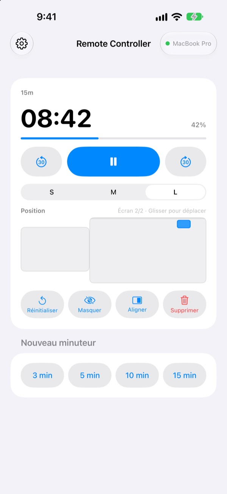
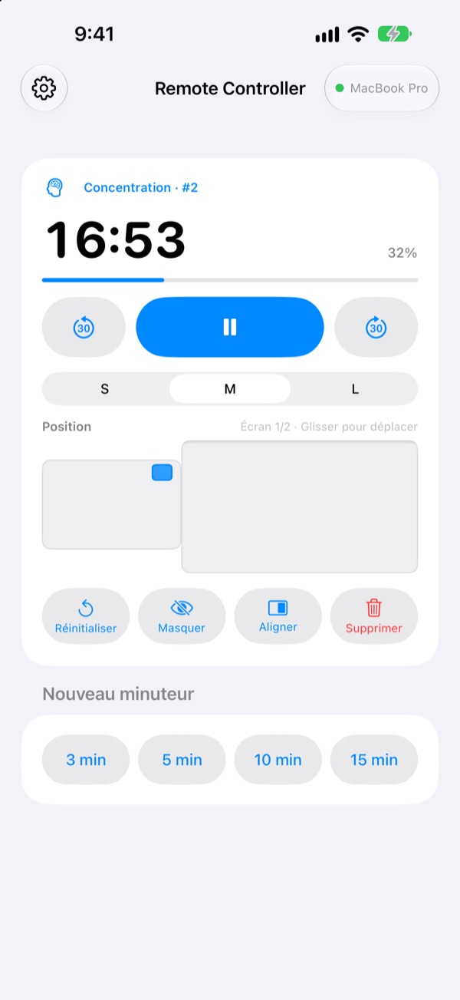
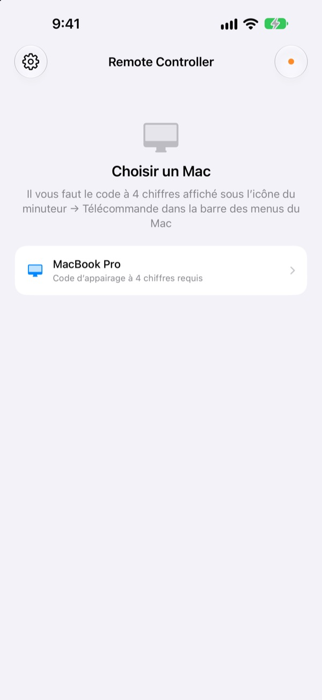

Éloignez-vous du Mac.
Gardez le temps en main.
Pilotez depuis l’iPhone les minuteurs de StickyPresenter sur votre Mac. Avancez vers le public et gardez un œil sur le temps restant, mettez en pause, ajoutez 30 secondes ou écartez le minuteur du graphique qu’il masque.
Gratuit · iOS 17 ou ultérieur · Nécessite un Mac sur le même Wi‑Fi avec StickyPresenter ouvert.

Vous retournez encore à l’ordinateur pour toucher au minuteur ?
Votre exposé déborde et il vous faut plus de temps. Le minuteur est posé pile sur votre meilleur graphique. Jusqu’ici, il fallait traverser la scène et chercher le trackpad devant tout le monde. Avec Remote Controller, vous restez où vous êtes et touchez une fois votre iPhone.
Voyez le temps restant, corrigez sur-le-champ
Le temps restant et la progression se mettent à jour chaque seconde. En Pomodoro, vous voyez aussi si c’est Concentration ou Pause, et à quel cycle vous en êtes.
Vous débordez ? Ajoutez 30 secondes. Vous finissez plus tôt ? Retirez-en 30. Lancez un nouveau minuteur de 3, 5, 10 ou 15 minutes d’un seul toucher, et passez le widget en S, M ou L pour que le dernier rang puisse le lire.

Un code à saisir une fois, et c’est tout
Ouvrez l’app : chaque Mac de votre Wi‑Fi où StickyPresenter est ouvert apparaît dans une liste. Choisissez le vôtre et tapez le code à quatre chiffres affiché sous l’icône du minuteur ▸ Télécommande, dans la barre des menus du Mac.
Ensuite, l’app se connecte toute seule à ce Mac chaque fois que vous l’ouvrez. Ni compte ni serveur : les deux appareils communiquent directement sur votre réseau local.

Prêt en trois étapes
- 1
Ouvrez StickyPresenter sur votre Mac
Dès que l’icône du minuteur est dans la barre des menus, c’est bon. L’app y reste même quand toutes ses fenêtres sont fermées.
- 2
Ouvrez l’app sur le même Wi‑Fi
Quand l’accès au réseau local vous est demandé, touchez Autoriser. C’est ainsi qu’elle trouve votre Mac.
- 3
Choisissez votre Mac et saisissez le code
Tapez le code d’appairage à quatre chiffres affiché sous l’icône du minuteur ▸ Télécommande, dans la barre des menus du Mac, et vous avez la main.
Ce que vous pouvez faire depuis l’iPhone
- Temps restant
- Temps qui reste, progression, phase Pomodoro (Concentration ou Pause) et numéro du cycle, chaque seconde
- Démarrer · Pause
- Un seul grand bouton au centre
- −30 s · +30 s
- Les boutons de chaque côté ajustent aussitôt un minuteur en cours
- Nouveau minuteur
- 3, 5, 10 ou 15 minutes
- Taille
- Widget en S, M ou L
- Position
- Faites-le glisser sur une miniature de la disposition des écrans du Mac, jusque sur un écran étendu
- Masquer
- Cache le widget au public un instant
- Aligner
- Ramène un widget égaré à côté de la fenêtre du minuteur
- Réinitialiser · Supprimer
- Remet le minuteur à zéro ou le supprime
- Raccourcis · Siri
- Dites
Lancer un minuteur avec Remote Controllerpour afficher un minuteur sur le Mac
La télécommande ne pilote que les minuteurs qui tournent sur le Mac. Vos notes et les textes du prompteur ne sont jamais envoyés à l’iPhone, et elle ne fait pas défiler les diapos.
Questions fréquentes
Puis-je utiliser l’app iPhone toute seule ?
Non. Remote Controller est la télécommande de StickyPresenter pour Mac : StickyPresenter doit donc être ouvert sur un Mac connecté au même Wi‑Fi. Téléchargez l’app Mac via le lien ci-dessous, ou depuis Obtenir l’app Mac dans les Réglages de l’app.
Mon Mac n’apparaît pas dans la liste.
Si aucun Mac n’apparaît au bout de 10 secondes, l’app affiche une liste de vérifications. Suivez-la dans l’ordre : StickyPresenter est ouvert sur le Mac (cherchez l’icône du minuteur dans la barre des menus), les deux appareils sont sur le même Wi‑Fi (les réseaux invités ne fonctionnent pas), Remote Controller est activé dans Réglages ▸ Confidentialité et sécurité ▸ Réseau local sur l’iPhone, StickyPresenter est autorisé dans Réglages Système ▸ Confidentialité et sécurité ▸ Réseau local sur le Mac, et aucun VPN n’est activé.
L’app indique que le code d’appairage est incorrect.
Saisissez les quatre chiffres affichés en ce moment sous l’icône du minuteur ▸ Télécommande, dans la barre des menus du Mac. Si quelqu’un a cliqué sur Nouveau code d’appairage sur le Mac, seul le nouveau code fonctionne.
L’app indique que le Mac ne reconnaît plus cet iPhone.
Cela arrive après Oublier les télécommandes appairées sur le Mac, ou après une réinstallation de StickyPresenter. Touchez le Mac dans la liste et saisissez à nouveau le code d’appairage.
L’app indique que le Mac ne répond pas.
Vérifiez que le Mac n’est pas en veille, que les deux appareils sont sur le même Wi‑Fi et qu’aucun VPN n’est activé.
L’app indique que l’app Mac doit être mise à jour.
StickyPresenter sur votre Mac est plus ancien que la télécommande. Mettez-le à jour depuis le Mac App Store, puis choisissez à nouveau le Mac.
Est-ce sûr dans une salle de réunion pleine de Mac ?
Oui. La télécommande ne parle qu’au Mac auquel elle est appairée, et une télécommande qui ne connaît pas votre code ne peut pas atteindre votre Mac. Tout passe par une connexion directe et chiffrée sur le même réseau. Si vous avez déjà montré votre code à quelqu’un, cliquez sur Nouveau code d’appairage sur le Mac.
Qu’est-ce qui passe par Internet ?
Vos minuteurs et vos commandes ne quittent jamais votre réseau local. Seuls partent sur Internet des statistiques d’utilisation anonymes, des rapports de plantage et les avis que vous choisissez d’envoyer. La politique de confidentialité donne le détail.
Siri peut-il lancer un minuteur juste avant que je prenne la parole ?
Oui. Dites « Lancer un minuteur avec Remote Controller », ou utilisez l’action Lancer un minuteur sur le Mac dans Raccourcis. L’app s’ouvre et démarre un minuteur de la durée choisie (de 1 à 600 minutes) dès qu’elle est connectée au Mac.
Une question, un bug, une idée ? Écrivez à mizzking75@gmail.com, ou envoyez-les directement depuis l’iPhone via la roue dentée en haut à gauche de l’app ▸ Donner son avis.